Five moves: build a word list, scan for seeds, extend with X-drop, score with bits, read the E-value.
Learning objectives
- Distinguish read alignment (one short query against one fixed reference) from database search (one query against millions of unknown homologs); explain why a different algorithm class is needed.
- Describe the BLAST seed-and-extend heuristic: word-list construction, neighbourhood expansion, two-hit gap filtering, ungapped extension, gapped extension.
- Compute an E-value from a bit score, query length, and database size using the Karlin-Altschul formula.
- Explain bit scores as log-likelihood ratios derived from substitution matrices (PAM, BLOSUM); compare PAM30 vs PAM250 vs BLOSUM62 use-cases.
- Walk through PSI-BLAST iteration: from seed BLAST to PSSM construction to iterative refinement; recognise the EM-style structure.
- Compare modern fast alternatives — DIAMOND, MMseqs2, USEARCH — by their algorithmic compromise (precomputed indices, double-spaced seeds, k-mer filtering).
- Frame BLAST as a detection-theoretic problem: the bit-score threshold is a false-discovery threshold; E-value statistics quantify the sensitivity-specificity trade-off.
Part 1 · 20 min From Read Mapping to Database Search
1.1 Two different problems
In Lecture 2 you learned to map reads to a reference. The setup:
- Query: ~10⁸ reads, each ~150 bp.
- Reference: one genome, ~3 Gbp, fixed.
- Indexing: build the FM-index once; reuse for every read.
- Goal: find approximate locations of each read.
This lecture solves a different problem:
- Query: one or a few sequences of interest (typically ~10²–10⁵ bp).
- Database: millions of sequences from many organisms (NCBI nr ~600 GB; UniProt ~250 GB).
- Goal: find evolutionarily-related sequences ("homologs") in the database, with statistical confidence.
The two differ in three ways:
- Scale flips: read mapping has many queries against one reference; database search has one query against many references. The optimal data structure flips with it.
- Edit distance is no longer the right metric: distantly related proteins may share only ~25% identity but conserve structural function. We need a substitution-aware score.
- Statistical significance: with millions of database hits, what makes a single hit not random? Karlin-Altschul gives the answer.
1.2 Why exact algorithms fail
A naive Smith-Waterman against the entire database: $O(\text{query} \times \text{database}) \approx O(10^5 \times 10^{11}) = O(10^{16})$ operations per query. At $10^9$ ops/s this is $10^7$ seconds = ~4 months per query.
The observation that fixed BLAST: most database sequences are completely unrelated to your query, and we only need full-precision alignment for the small fraction that share at least a small region of strong similarity. So:
- Find short, high-scoring seeds rapidly via hashing.
- Extend seeds to gapless then gapped alignments only when a seed is strong enough.
- Compute E-values to decide which extensions are statistically significant.
This three-step pattern — seed → extend → score — is the BLAST pipeline.
1.3 The first miracle: heuristic search with statistical guarantees
BLAST (Altschul, Gish, Miller, Myers, Lipman 1990, J. Mol. Biol.) was a phenomenal trick: it gave up exact optimality but recovered statistical interpretability. You don't get the optimal alignment, but you get an honest E-value: how many hits this strong would you expect by chance against a random database of this size?
This made BLAST the most-used scientific software in history. As of 2024 the NCBI BLAST web service handles ~3M queries / day.
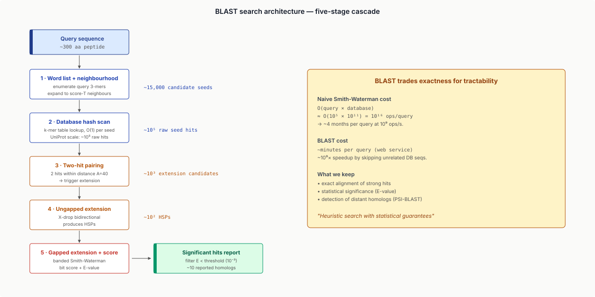
1.4 The detection-theoretic frame
Part 2 · 30 min Substitution Matrices and Bit Scores
2.1 Why protein, not nucleotide, dominates
For evolutionarily distant comparisons, protein BLAST (BLASTP) dominates over nucleotide BLAST because:
- The genetic code is degenerate: 64 codons → 20 amino acids. Synonymous nucleotide changes (no protein change) are noise we want to discount.
- Protein-level identity decays slower than nucleotide identity; you can detect homology at 25% protein identity that's invisible at the nucleotide level.
For protein search, we need a substitution matrix: a 20×20 score for replacing residue $i$ with residue $j$.
2.2 PAM matrices
PAM (Point Accepted Mutation) matrices (Margaret Dayhoff, 1978) are computed from observed substitutions in closely-related proteins (~85% identity), then extrapolated by matrix exponentiation:
- PAM1: substitution probabilities expected after 1% of residues have changed.
- PAM250 = PAM1²⁵⁰: the model after 250% expected substitutions per residue (with multiple substitutions at the same position).
Each matrix entry $s_{ij}$:
$s_{ij} = \log_2 \dfrac{p_{ij}}{f_i \cdot f_j}$
where $p_{ij}$ is observed joint frequency and $f_i, f_j$ are background residue frequencies. The score is the log-odds that residues $i$ and $j$ co-occur due to homology rather than chance.
- PAM30 / PAM70: short, closely-related searches.
- PAM250: distantly-related comparisons (the classical default).
2.3 BLOSUM matrices
BLOSUM (BLOcks SUbstitution Matrix) matrices (Henikoff & Henikoff, 1992) are computed directly from observed substitutions in conserved blocks of distantly-related proteins (Pfam-like data):
- BLOSUM62 is the most-used substitution matrix in computational biology. Trained on protein blocks where pairwise identity is $\leq 62\%$.
- Smaller BLOSUM number = more distant comparisons it was trained on.
- Larger BLOSUM number = more closely-related.
BLOSUM62 superseded PAM250 because:
- Direct observation, no extrapolation.
- Robust for protein-search tasks at the typical homology range.
- Empirically better sensitivity at distant homology levels.
NCBI BLAST defaults to BLOSUM62.
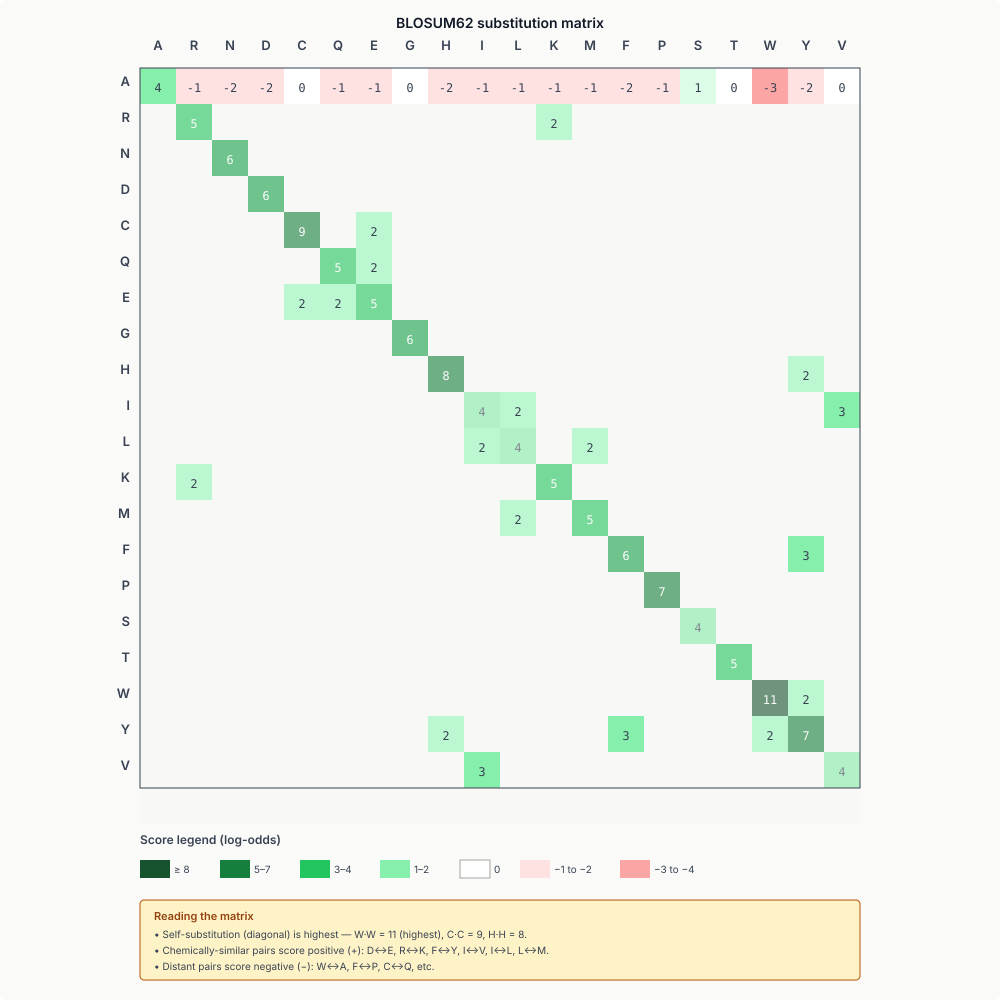
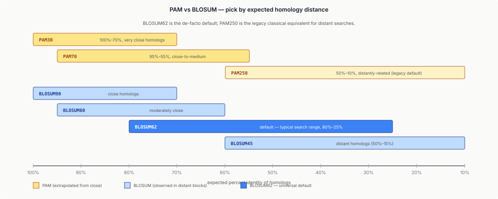
2.4 Bit scores
Aligning two sequences with BLAST produces a raw score $S$ (sum of substitution-matrix entries minus gap costs). Raw scores are matrix-dependent (a 100 with BLOSUM62 ≠ a 100 with PAM250).
To make scores comparable, BLAST converts to bit scores:
$S' = \dfrac{\lambda S - \log K}{\log 2}$
where $\lambda$ and $K$ are matrix-specific Karlin-Altschul parameters. Bit scores are matrix-independent and have a precise log-likelihood-ratio interpretation: a bit score of $S'$ means the alignment is $2^{S'}$ times more likely under the homology model than under random.
2.5 Gap penalties
Beyond residue substitutions, alignments include gaps (insertions / deletions). BLAST uses an affine gap penalty:
$\text{gap penalty} = -G_o - (n - 1) \cdot G_e$
where $G_o$ is gap-open penalty, $G_e$ is gap-extend, $n$ is gap length. Affine penalties are biologically realistic — opening a gap is hard, extending an existing one is easier.
Part 3 · 40 min The Seed-and-Extend Heuristic
3.1 Word lists and neighbourhoods
The query is decomposed into all overlapping k-mers (BLASTP default $k = 3$; BLASTN default $k = 11$). For each k-mer in the query, BLAST computes its neighbourhood: all k-mers in the alphabet whose substitution-matrix score with the query k-mer exceeds a threshold $T$.
For BLASTP $k = 3$:
- Total possible 3-mers: $20^3 = 8{,}000$.
- For a typical query 3-mer, its neighbourhood at $T = 11$ contains ~50 3-mers.
- Total neighbourhood size for a 300-residue query: $\sim 50 \times 300 \approx 15{,}000$ 3-mers.
The database is hashed by 3-mer, so a 3-mer lookup is $O(1)$.
3.2 The two-hit method
Earlier BLAST versions extended every seed match. In BLAST 2.0 (Altschul et al. 1997) this was tightened: an extension is triggered only when two non-overlapping seed hits occur within distance $A$ on the same database sequence (the "two-hit method"). This dramatically reduces extension cost while preserving sensitivity for true homologs (which typically have multiple close seeds).
Default $A = 40$ for BLASTP.
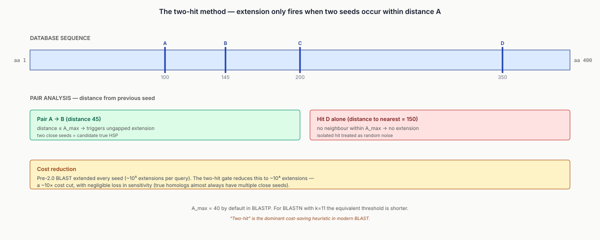
3.3 Ungapped extension
Each two-hit-paired seed is extended in both directions without allowing gaps. The extension stops when the running score drops by more than $X$ from its current maximum (an X-drop algorithm). This produces a High-scoring Segment Pair (HSP) — a maximal ungapped local alignment.
The X-drop heuristic is essentially the matched-filter analog of "if the running cross-correlation has dropped this far below peak, we've left the peak; stop".
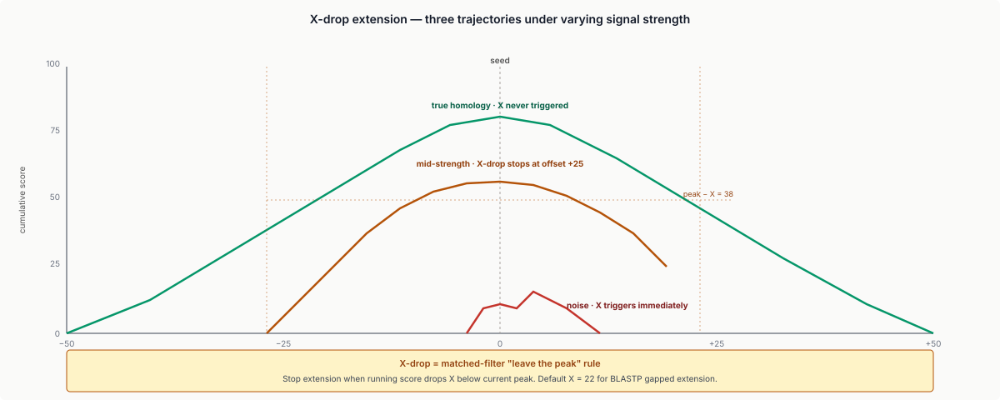
3.4 Gapped extension
HSPs that pass an HSP-score threshold are then gap-extended — Smith-Waterman is run, restricted to a band around the HSP. The result is the final gapped alignment.
In modern BLAST (post-2.0), gapped extension is performed on only the strongest HSP per query-database-sequence pair (the "best HSP" model).
3.5 The composition-based score adjustment
Composition-based statistics (Schäffer et al. 2001) adjust scores when the database sequence has unusual amino-acid composition (e.g., signal peptides rich in hydrophobic residues, low-complexity regions). Without adjustment, low-complexity regions produce huge numbers of spurious high-scoring matches. With adjustment, the bit-score is corrected for the local background frequency.
This is on by default in modern BLAST.
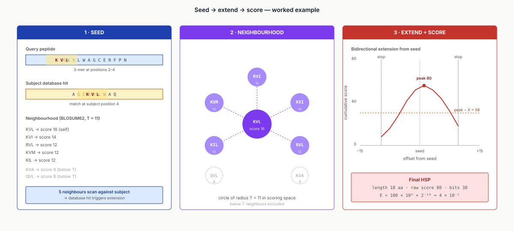
Part 4 · 40 min Karlin-Altschul Statistics and E-values
4.1 The null model
What's the distribution of bit scores you'd see from a random query against a random database? If the answer were Gaussian, we'd be in trouble: the tail of a Gaussian decays slowly. Karlin and Altschul (1990, 1991) proved a beautiful result: bit scores from optimal local alignments follow an extreme-value (Gumbel) distribution.
For a query of length $m$ against a database of length $n$, the expected number of HSPs with bit score $\geq S'$ is approximately:
$E = K \cdot m \cdot n \cdot e^{-\lambda S}$
where $\lambda$ and $K$ are matrix-and-gap-specific constants (precomputed and tabulated in BLAST).
In bit-score form (since $S' = (\lambda S - \log K) / \log 2$), this simplifies to:
$E = m \cdot n \cdot 2^{-S'}$
Beautiful. The expected-by-chance number of hits at bit score $S'$ falls exponentially in $S'$.
4.2 Bit-score interpretation
The exponential form gives bit scores their name and intuition:
- A bit score of 30 in a database of size $n = 10^9$ and query length $m = 100$ gives $E = 10^{11} \cdot 2^{-30} \approx 100$. Not significant.
- A bit score of 50 gives $E = 10^{11} \cdot 2^{-50} \approx 10^{-4}$. Strongly significant.
- Each extra bit halves the expected by-chance count.
The classic significance thresholds:
- $E < 10^{-3}$: probably significant.
- $E < 10^{-10}$: almost certainly significant.
- $E < 10^{-50}$: bullet-proof homology.
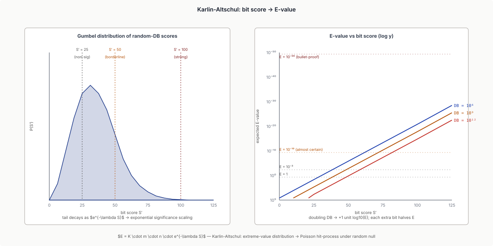
4.3 P-values vs E-values
The relationship: $P = 1 - e^{-E}$. For small $E$ (the regime that matters), $P \approx E$. BLAST reports E-values because they're more interpretable when $E > 1$ — saying "this alignment is expected to occur 5 times by chance" is clearer than "P = 0.99326".
4.4 Database-size effects
E-values scale linearly with database size (the $m \cdot n$ term). Doubling the database doubles the E-value at any given bit score.
Practical implications:
- Searching the same query against NR (small) vs UniRef90 (medium) vs full UniProt (large) gives different E-values for the same alignment.
- The bit score is the same; only its statistical interpretation changes.
- "BLAST against a small database first, then re-test" is a common workflow trick: get the alignment from a small DB, but interpret it against a more complete DB if it survives.
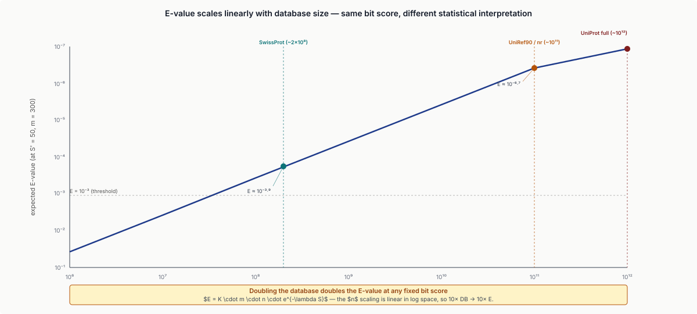
4.5 The BLAST output format
A typical BLAST hit reports:
> tr|A0A024R7T9|A0A024R7T9_HUMAN Some Protein
Length=247
Score = 187 bits (475), Expect = 4e-49, Method: Composition-based stats.
Identities = 95/120 (79%), Positives = 102/120 (85%), Gaps = 0/120 (0%)- Score (in bits): the bit score of the alignment.
- Expect: the E-value.
- Identities: the count and percentage of exact matches in the alignment.
- Positives: the count and percentage of positions where the substitution-matrix score is positive (e.g., D ↔ E counts as positive even though they're not identical).
- Method: Composition-based stats: the score-adjustment scheme used.
![A typical BLAST output snippet with each line annotated. Score = 187 bits (475) — bit score (matrix-independent) and raw score (matrix-dependent) labelled. Expect = 4e-49 — E-value labelled. Method: Composition-based stats — local-composition correction labelled. Identities = 95/120 — exact-match count and proportion. Positives = 102/120 — positive-substitution count. Query / Sbjct alignment region with offset labels. Side panel listing what to ignore (low-Identities high-bit hits in low-complexity regions).](../diagrams/lecture-19/12-blast-output.svg)
4.6 The composition correction in detail
Without composition correction, a query that's compositionally biased (e.g., glycine-rich) gets inflated bit scores against any glycine-rich database hit, regardless of whether they're truly homologous. The correction reweights the substitution matrix on a per-alignment basis to account for local residue frequencies. It's a clean Bayesian-prior adjustment in disguise.
Part 5 · 25 min PSI-BLAST and Profile-Based Search
5.1 Why iterate
Standard BLASTP detects homologs at ~25% identity. Below that, sensitivity drops. Many real homologs share less than 25% identity (e.g., distantly related kinases, transcription factor families). Single-pass BLAST misses them.
The trick: run BLAST iteratively, each iteration feeding the alignment of detected hits back as a profile that becomes the new query.
5.2 The PSI-BLAST algorithm
PSI-BLAST (Position-Specific Iterated BLAST), Altschul et al. 1997:
- Iteration 0: standard BLASTP with the query.
- Construct profile: from all hits with $E < E_{\text{include}}$ (default 0.005), build a multiple alignment, then a Position-Specific Scoring Matrix (PSSM) — a $20 \times L$ matrix giving substitution scores per query position.
- Iteration $\geq 1$: run BLAST again, but use the PSSM instead of BLOSUM62 for scoring.
- Repeat until convergence (no new hits) or maximum iterations (default 5).
Each iteration the PSSM gets better; the search becomes more sensitive at distant homology levels.
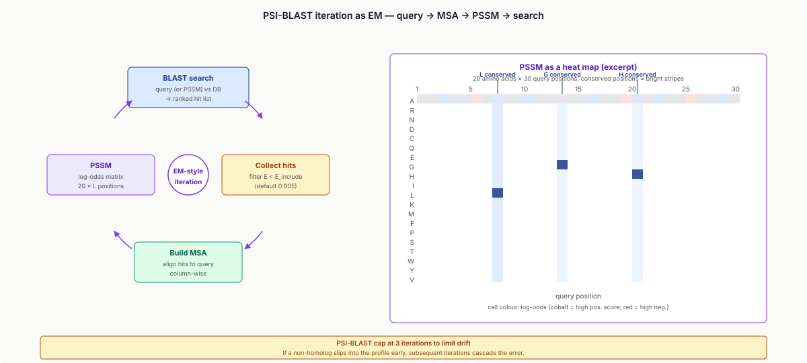
5.3 PSSM construction
For each column $i$ of the alignment, compute the observed frequency $q_{i,a}$ of amino acid $a$. The PSSM entry is:
$M_{i,a} = \log \dfrac{q_{i,a}}{f_a}$
where $f_a$ is the background frequency. With pseudocounts (Dirichlet priors) to avoid zero-frequency artefacts.
Conserved positions (always D in the alignment) get high scores for D, very low for everything else. Variable positions (any amino acid) give near-zero scores.
5.4 Why PSI-BLAST works — and where it fails
PSI-BLAST is essentially a generalised EM-style iteration: alternate between "what's in my homology set" (E-step: BLAST) and "what's the best profile" (M-step: PSSM construction). It increases sensitivity but introduces drift risk — if a non-homologous hit slips into the profile early, it pulls the PSSM off-target and subsequent iterations cascade the error.
Practical tips:
- Set $E_{\text{include}}$ tighter than default (e.g., $10^{-4}$) for distantly-related searches.
- Manually inspect the alignment between iterations; remove obvious non-homologs.
- Cap at 3 iterations for safety.
5.5 Connection to HMMER
HMMER (next lecture, L7-new) generalises this idea: instead of a position-specific scoring matrix, build a profile HMM with explicit insertion / deletion states. PSI-BLAST is to HMMER what k-means is to Gaussian mixture models — same family, more limited noise model.
The two are complementary in practice: PSI-BLAST is fast and easy; HMMER is more sensitive at the deep-homology end (~10–20% identity).
Part 6 · 25 min Modern Fast Alternatives
6.1 Why classical BLAST is slow
The classical BLAST design from 1997 was tuned for hardware of the era (~MHz CPUs, MBs of RAM, GBs of disk). Modern bioinformatics has:
- ~$10^9$ protein sequences in databases.
- TB-scale RAM available.
- Multi-core CPUs.
- GPU accelerators.
Modern alternatives exploit these to deliver 100–1000× speedup while preserving most of BLAST's sensitivity.
6.2 USEARCH and UCLUST
USEARCH (Edgar 2010): orders database by length and uses precomputed k-mer profiles per database sequence. Massive speedup for clustering and search at high identity ($\geq 70\%$). The free version (UCLUST) is widely used in microbiome 16S workflows.
6.3 DIAMOND
DIAMOND (Buchfink, Xie, Huson 2015) is the de facto BLASTP replacement at scale:
- Double-indexed seeds: indexes both query and database, then matches index entries.
- Spaced seeds: instead of contiguous k-mer matches, allows certain "wildcard" positions in the seed pattern (e.g., XX-XXX where – is any).
- Block-based caching: streams database blocks through cache-friendly batch processing.
Achieves ~100–1000× speedup over BLASTP at ~95% sensitivity. The default for metagenomic searches against Pfam / UniRef90.
6.4 MMseqs2
MMseqs2 (Steinegger & Söding 2017): targets the deepest homology (~10% identity), at speeds competitive with DIAMOND.
- Uses a k-mer prefilter (similar to BLAST's seed step) but with much larger k-mer tables.
- Vectorised SIMD-accelerated extension.
- Scales gracefully to billion-sequence databases.
MMseqs2 cluster mode handles UniRef-scale clustering in hours where pre-MMseqs tools took weeks.
6.5 The speed-sensitivity Pareto
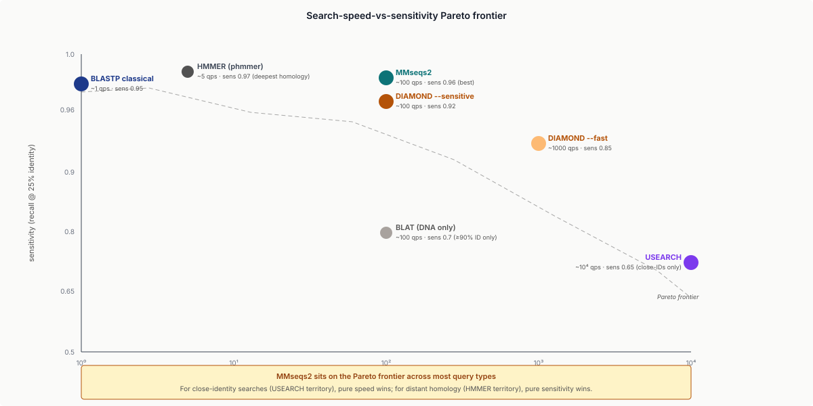
Part 7 · 20 min Application Patterns
7.1 Genome annotation
When a new genome is assembled, first-pass annotation uses BLAST: search the predicted protein-coding genes against UniProt. Each hit annotates a gene with its closest UniProt match's name, function, and Pfam domain assignments.
This is the workhorse of every assembly pipeline: NCBI's PGAP, Ensembl, MAKER, BRAKER all use BLAST/DIAMOND under the hood.
7.2 Reciprocal best hits
To identify orthologs (genes from different species sharing common ancestry without duplication), the simplest method is Reciprocal Best Hits (RBH):
- BLAST gene A from species 1 against species 2; best hit is gene B.
- BLAST gene B from species 2 against species 1; if best hit is gene A → A and B are reciprocal best hits.
- RBH pairs are predicted orthologs (with caveats around recent duplications).
OrthoMCL and OrthoFinder are modern extensions of RBH using clustering.
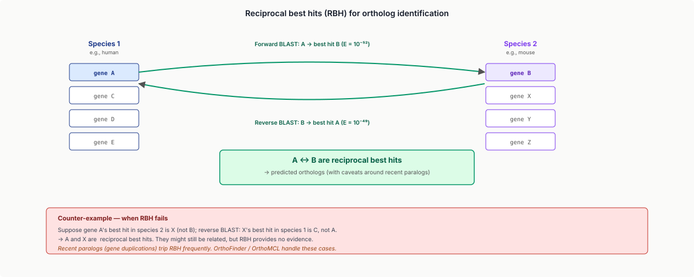
7.3 Protein function transfer
The transitive function-transfer workflow:
- Query protein X against UniProt.
- Top hit is Y, with E-value $10^{-50}$.
- Y has a curated GO term annotation (from L6).
- Transfer Y's annotation to X (with appropriate caveats about confidence).
This is how every newly-sequenced microbe gets functional annotations within hours of assembly. Caveat: function transfer only works above ~50% identity; below that, the protein may share fold without sharing function.
7.4 Detecting horizontal gene transfer
Genes acquired by horizontal transfer (HGT) — transferred between species rather than vertically inherited — show anomalous BLAST profiles: a microbial gene's best hit is in a distant phylum rather than a sibling species. Detecting HGT events relies on this anomaly. Used for tracking antibiotic-resistance gene spread, bacterial-eukaryote transfer, and phage-host integration.
7.5 Drug target / off-target prediction
If a drug binds protein A, a BLAST search of A against the proteome reveals other proteins with similar sequences — likely off-target candidates. Used in selectivity profiling: kinases share structural fold and 30-50% identity in their kinase domains, so even highly-specific drugs hit ~5-10 off-target kinases. BLAST-derived off-target lists are the standard first-pass for safety profiling.
Wrap-up
What you should take away
- BLAST is heuristic search with statistical guarantees: seed-and-extend gives up exactness but recovers an honest E-value.
- Bit scores are log-odds: matrix-independent, additively interpretable, scaling exponentially in significance.
- Karlin-Altschul gives E-values: extreme-value distribution → Poisson hit-process under random null. The E-value scales linearly with database size and exponentially with bit score.
- PSI-BLAST iterates from query to PSSM: EM-flavoured profile refinement; sensitive to drift; capped at ~3 iterations in practice.
- Modern alternatives (DIAMOND, MMseqs2) trade modest sensitivity for 100–1000× speedup. They've replaced classical BLAST for any serious large-scale workflow.
- Application patterns are predictable: genome annotation (UniProt search), ortholog identification (RBH), function transfer, HGT detection, off-target prediction. BLAST is in every genomics pipeline somewhere.
Next lecture
Multiple sequence alignment (MSA) — generalising pairwise to families. Phylogenetics: building evolutionary trees. Comparative genomics: synteny, orthologs, paralogs. Lecture 20 / new L4 in the proposed reorder.
Homework
- Run BLASTP via NCBI's web interface with a query of your choice (any UniProt protein) against the SwissProt subset. Note bit scores, E-values, and identity percentages of the top 10 hits. Repeat against UniRef90; compare E-values for identical alignments.
- Pick a kinase domain (~250 aa) from PDB. Run PSI-BLAST for 3 iterations. Track how the hit list grows; note any clear drift cases (kinase → non-kinase domains).
- Compute by hand: a query of length 100 against a database of length $10^9$ produces an HSP with bit score 45. Compute E. Compute the bit score that would yield $E = 10^{-3}$.
- Use DIAMOND --sensitive on a metagenomic translated read set against UniRef90. Compare runtime and result count to BLASTP. What proportion of significant hits agree between the two tools?
- From a Pfam domain of your choice, construct a manual PSSM by aligning 5 representative sequences. Use it to score a held-out query; compute the bit-score-to-E-value conversion for a hypothetical search.
Recommended reading
- Altschul, S. F., Gish, W., Miller, W., Myers, E. W., & Lipman, D. J. (1990). Basic local alignment search tool. Journal of Molecular Biology 215, 403–410.
- Altschul, S. F., Madden, T. L., Schäffer, A. A., et al. (1997). Gapped BLAST and PSI-BLAST: a new generation of protein database search programs. Nucleic Acids Research 25, 3389–3402.
- Karlin, S., & Altschul, S. F. (1990). Methods for assessing the statistical significance of molecular sequence features by using general scoring schemes. PNAS 87, 2264–2268.
- Henikoff, S., & Henikoff, J. G. (1992). Amino acid substitution matrices from protein blocks. PNAS 89, 10915–10919.
- Buchfink, B., Xie, C., & Huson, D. H. (2015). Fast and sensitive protein alignment using DIAMOND. Nature Methods 12, 59–60.
- Steinegger, M., & Söding, J. (2017). MMseqs2 enables sensitive protein sequence searching for the analysis of massive data sets. Nature Biotechnology 35, 1026–1028.
- Edgar, R. C. (2010). Search and clustering orders of magnitude faster than BLAST. Bioinformatics 26, 2460–2461.
- NCBI BLAST: blast.ncbi.nlm.nih.gov
- DIAMOND: github.com/bbuchfink/diamond
- MMseqs2: github.com/soedinglab/MMseqs2
- UniProt: uniprot.org
Appendix — timing summary
| Block | Time | Cumulative |
|---|---|---|
| Part 1 — From Read Mapping to Database Search | 20 min | 0:20 |
| Part 2 — Substitution Matrices and Bit Scores | 30 min | 0:50 |
| Part 3 — The Seed-and-Extend Heuristic | 40 min | 1:30 |
| Part 4 — Karlin-Altschul Statistics and E-values | 40 min | 2:10 |
| Part 5 — PSI-BLAST and Profile-Based Search | 25 min | 2:35 |
| Part 6 — Modern Fast Alternatives | 25 min | 3:00 |
| Part 7 — Application Patterns | 20 min | 3:20 |
| Wrap-up | 10 min | 3:30 |
Total: ~3h 30min of content.